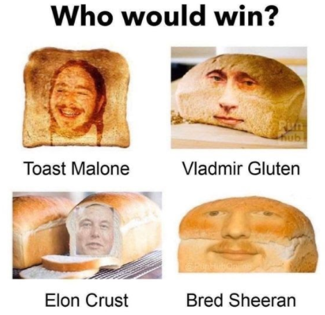

VDS Nieuwsbrief
Werkgroepen
Wist je dat de West-Vlaamse speelpleinen aan kop staan wanneer het aankomt op aangekocht bedrag en hoeveelheid bij het materiaalmagazijn?

Na het fantastische succes van de nieuwjaarsreceptie is werkgroep Fun & Bedanking weer in de startblokken geschoten. Ze zijn namelijk volop bezig met het organiseren van de 1 mei activiteit! Het belooft alweer een schitterende editie te worden met als hoogtepunt dit jaar de slachting van het regenboogvarken!
- Waar? Gent City
- Wanneer? 24 april, pas op dat je je niet vergist!
- Wat? Dat kom je te weten als je komt
- Corona? Breng je eigen drinkfles en mondmasker mee
- inschrijven? Kan op deze link
Daarnaast was er nog Bubblegumday maar daar lees je meer over hieronder.

Na het fantastische succes van de nieuwjaarsreceptie is werkgroep Fun & Bedanking weer in de startblokken geschoten. Ze zijn namelijk volop bezig met het organiseren van de 1 mei activiteit! Het belooft alweer een schitterende editie te worden met als hoogtepunt dit jaar de slachting van het regenboogvarken!
- Waar? Gent City
- Wanneer? 24 april, pas op dat je je niet vergist!
- Wat? Dat kom je te weten als je komt
- Corona? Breng je eigen drinkfles en mondmasker mee
Yes, yes, yes lieverds! De werkgroep Laatste Avond is begonnen met schrijven! Sinds de nieuwjaarsbrief hebben we er twee vergaderingen bij gedaan en de activiteiten uitgeschreven. We zijn begonnen met het aanleggen van het draaiboek, het spelverloop en hebben al bepaald wat er allemaal te doen zal zijn in ons nieuw Laatste Avond-spel. Tis de moeite!
Wat zijn de volgende stappen? Alle reeds verzamelde stukken netjes uitschrijven en verzamelen in het draaiboek, rollen schrijven en bouwplannen maken. Misschien maken we een extra grote voetnoot met alle variapuntjes van het voorbije werkjaar? ahem
Bubblegumday
Er werd dit jaar weer heel wat besproken op de Bubblegumday! Er kwam veel aan bod maar het voornaamste thema was toch wel bedanking! Hier een korte samenvatting van de belangrijkste punten!Engagementen bedanken
Als eerste werd er gebabbeld over het bedanken van de engagementen zoals werkgroepen, logistieke vrijwilligers... De voornaamste conclusie was dat er zal gewerkt worden op basis van een puntensysteem.
Cursus
Rond cursussen is er ook een bedankingssysteem uitgewerkt! Zoals je wel weet kreeg iemand
die nu
een
volledige week cursus gegeven heeft 40 euro maar die durfde soms wel eens te stromen naar een
welkomst-etentje, gadget of evaluatie-etentje.
Hier werd nog eens goed over nagedacht en na een dagenlange discussie van enkele uren is er
beslist
om dit toch wat te herverdelen. Met in ons achterhoofd dat een cursus eerder een
belevenis is
dan iets dat geld moet opbrengen. Vanuit die visie werd volgende beslist:
- Een instructor krijgt voor een volledige week cursus geven €25
- Het kookteam/de logistieke vrijwilliger krijgt €10 voor een volledige week cursus
- Indien je maar een halve week of minder kan, dan worden bovenstaande bedragen gedeeld door twee
- Er is ongeveer €40 per persoon voorzien om iets te eten voor cursus en de evaluatie of andere activiteiten die het cursusteam wil doen zoals bijvoorbeeld een nerfgun aankopen om te battelen op cursus. Het cursusteam mag zelf kiezen wat ze met dit geld doen
- Daarnaast is er nog de pot om lekkers te kopen voor op cursus, die is hierboven niet meegerekend ;)

Stoppende vrijwilligers
Omdat we het gevoel hadden dan we de stoppende vrijwilligers soms uit het oog verloren, hadden we in gedachten om de bedanking van stoppende vrijwilligers eens wat meer te formaliseren! Het voornaamste dat je hier moet van weten is het volgende
- We baseren ons op mijlpalen bereikt door de vrijwilliger (nog een work in progress...)
- Er komt een vast bedankingsmoment op de nieuwjaarsreceptie maar er wordt ook nog gekeken om iets persoonlijk te organiseren voor een stoppende vrijwilliger door mensen die dicht bij de vrijwilliger staan
Cursussen
Ook de curssussen waren dit voorjaar weer schitterende verwezelijkingen door de vrijwilligers van VDS WVL! In deze moeilijke tijden is het ons toch gelukt om een hele hoop animatoren en hoofdanimatoren te vormen! Bedankt aan alle instructoren en mensen die dit hebben helpen verwezenlijking!!
Herbekijk de aftermovie van krokuscrusus nog eens hieronder:
Varia
- Een lijst met varias